多项式因子分解问题比最大公因子问题要复杂，因而也更困难一些。然而令人惊喜的是在有限域上，多项式的因子分解问题却变得十分简单，这给我们提供了一种将整数环或有理数域上的多项式因子分解问题转化到较简单的有限域情况上来解决的可能性。
这一部分我们首先解决域上的多项式因子分解问题。这些内容是![$\mathbb{Z}[x]$](latex/latex2png-PolyFacZp_27044286_-5.gif) ,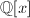,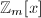乃至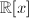,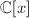和多元多项式因子分解的基础.
,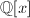,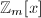乃至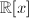,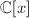和多元多项式因子分解的基础.
在有限域上进行因子分解的方法很多，一般来说,有限域上多项式因子分解要经过下面三个步骤：
- 无平方因子分解(squarefree factorization)
- 不同次数因子分解(distinct-degree factorization)
- 同次因子分解(equal-degree factorization)
这一章首先将从上面三个方面介绍有限域上的因子分解问题，然后讨论其他算法([1]Chapter 14).
 不同次数因子分解
不同次数因子分解
这里我们假定多项式是无平方因子的(squarefree)，即无重因子。这一点很容易做到，比如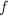含重因子，那么取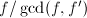，则可消去重因子，得到无重因子的多项式。不同次因子分解(Distinct-degree factorization)即是在无平方因子分解的基础上，将多项式中各不同次数因子的乘积逐一剥离出来。
首先我们介绍一些有限域的知识.
有限域和
 ,我们有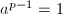且
,我们有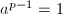且 ，有且
，有且
有限域的阶数只可能是素数以及素数的幂，对于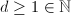,可以构造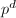阶的域如下：其中![$f\in\mathbb{F}_p[x]$](latex/latex2png-PolyFacZp_138719318_-5.gif) 是
是 次不可约多项式。
次不可约多项式。
Fermat小定理 对于素数以及素数的幂均成立，素数的幂情况证明同素数情况。
对于素数以及素数的幂均成立，素数的幂情况证明同素数情况。
下面的定理是Fermat小定理的推广，Fermat小定理是其 的特殊情形。
的特殊情形。
 取遍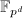中的元素。因此，
取遍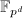中的元素。因此， 是无平方因子的，于是我们只须证明对任何中首一不可约
是无平方因子的，于是我们只须证明对任何中首一不可约 次多项式:
次多项式:
若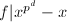,则由Fermat小定理，可以取的子集 使得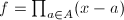.任取
使得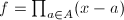.任取 ,令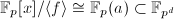,其中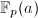是中包含的最小子域，有
,令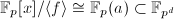,其中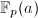是中包含的最小子域，有 个元素，是它的扩域，因此
个元素，是它的扩域，因此 .
.
若,令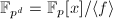,且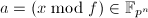为的一个根。而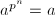,由于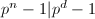，设则
将上式乘以 则可得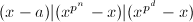.因此在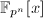中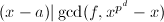,由于中多项式的最大公因子应该也在中，于是由其非平凡可推出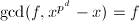,即.
□
则可得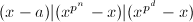.因此在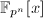中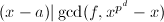,由于中多项式的最大公因子应该也在中，于是由其非平凡可推出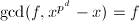,即.
□
不同次因子分解算法
不同次因子分解算法即是要求出多项式的不同次因子序列,其定义如下:
输入：无平方因子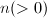0)$" class="latex-inline" style="vertical-align: -5px" width="47" height="18">次首一多项式,
输出：的不同次因子序列.
- 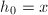,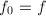,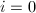,
 ,在环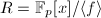中调用快速求幂算法计算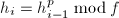,
,在环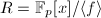中调用快速求幂算法计算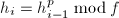,- 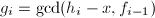,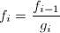,
- 若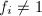则转到2步,
- 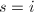,输出.
显然成立，设 均成立，则对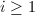,有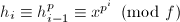且
均成立，则对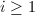,有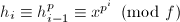且
由Fermat小定理推广，是中所有首一不可约且次数整除的多项式的乘积且能整除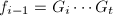,因此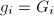(低于次的因子已在前面提出了).于是归纳证明了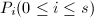成立，也同时可得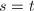.
□
算法1可在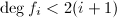时即终止，因为 所有不可约因子次数至少为
所有不可约因子次数至少为 ,因此即已经是不可约的了。
,因此即已经是不可约的了。
同次因子分解
本节基于上一节不同次因子分解的结果继续对其进行同次因子分解(Equal-degree factorization)，或者Cantor-Zassenhaus算法，直到将完全分解为不可约多项式的积。但是由于奇素数与2在下面的处理技术中有一点微小的区别，因此本节分成两部分来讨论.
特征为奇素数的有限域
 的因子，为中的
的因子，为中的 为
为 次幂同态(homomorphism)映射的象，易证其为的子群。的核为次单位根：
由于
次幂同态(homomorphism)映射的象，易证其为的子群。的核为次单位根：
由于 为域，则多项式的根至多有个，于是.
为域，则多项式的根至多有个，于是.
对于任何均成立，由Fermat小定理得,则 .于是由群同态定理
则且,.
□
.于是由群同态定理
则且,.
□
作为上面引理的推论，我们有
下面的概率性算法给出的可能因子，其中是经上节算法给出的无平方首一同次因子乘积，即存在的一个因子使得可分解为个次首一不可约因子.
输入：,,
输出：的首一因子 ,或者failure.
,或者failure.
- (随机)任取
![$a\in\mathbb{F}_q[x]$](latex/latex2png-PolyFacZp_213602218_-5.gif) 使得.若则输出failure,
使得.若则输出failure, - ,若且则输出,
- 调用快速求幂算法在环
![$R=\mathbb{F}_q[x]/\langle f\rangle$](latex/latex2png-PolyFacZp_148078825_-5.gif) 中计算,
中计算, - ,若且则输出,否则输出failure.
若设 ,则由中国剩余定理有如下的环同构：
其中.
引入下面记号：
,则由中国剩余定理有如下的环同构：
其中.
引入下面记号： ,其中.记,则对任意,我们有,且取两个值是等概率的.如果我们随机任意选取使得且，则是中随机元素，且等概率取
,其中.记,则对任意,我们有,且取两个值是等概率的.如果我们随机任意选取使得且，则是中随机元素，且等概率取 或
或 ,因此
此时是的一个因子(不一定不可约),除非(若有则,则.)，而后一种情况发生的概率为.()
,因此
此时是的一个因子(不一定不可约),除非(若有则,则.)，而后一种情况发生的概率为.()
 因而找到了一个因子,另一个因子为.
因而找到了一个因子,另一个因子为.
特征为2的有限域
以下设是一特征为2的域，且,是一正整数.上多项式是无平方因子次多项式,且是 个次不可约多项式之积.
个次不可约多项式之积.
使,此时至少将的一个非平凡因子分开.
□
 .
.
一个完整的因子分解算法
对于有重因子的多项式![$f\in\mathbb{F}_q[x]$](latex/latex2png-PolyFacZp_129716138_-5.gif) ，利用上两节的方法可以完全将其分解。如果设是首一的，并且的首一不可约因子分解为,记表示它的分解，则可利用下面的算法给出此分解：
，利用上两节的方法可以完全将其分解。如果设是首一的，并且的首一不可约因子分解为,记表示它的分解，则可利用下面的算法给出此分解：
输入：首一多项式, 为一素数幂.
为一素数幂.
输出：的分解 .
.
- ,
- ,
- 不同次因子分解：利用快速求幂算法计算,,
- 若则利用算法3求出的所有同次首一不可约因子,
- ,并不断除以的同次因子求出的次数,每求出一个,将
 添入
添入 ,
, - 直至,否则转第2步,
- 输出.
作为前面提过的诸多因子分解算法的应用，下面讨论多项式求根问题。设为![$\mathbb{F}_q[x]$](latex/latex2png-PolyFacZp_197029805_-5.gif) 上一非平凡多项式，则下面的算法给出其所有中的根。
上一非平凡多项式，则下面的算法给出其所有中的根。
这样算法就避免了将完全分解，先将其与取最大公因子，使得结果只能含有形如的因子。由此而衍生出下面的中求整数根的算法，但在引入该算法之前，先有下面的：
 次多项式，设,且是的非零根，,则.
，于是
次多项式，设,且是的非零根，,则.
，于是 
于是. □
![$f\in\mathbb{Z}[x]$](latex/latex2png-PolyFacZp_15161698_-5.gif) ,且.
,且. 中的不同的根.
中的不同的根. 的所有根,其中且.
的所有根,其中且. 次多项式且使得.的象还原出来。现在我们只需证明当且仅当.
次多项式且使得.的象还原出来。现在我们只需证明当且仅当.
若,则显然有.可设,则由引理4知.但由于,且两边多项式系数均比小，则有,故也有.
另一方面，若且，则,因此
证毕。 □
无平方因子分解
这一小节详细介绍无平方因子分解(Squarefree factorization).我们分两个部分进行.
特征为零的域上无平方分解
我们先假定是一特征为零的域，那么我们已经知道若是的 阶零点，则其是的
阶零点，则其是的 阶零点，于是中将只含的一次因子。当然我们可以在的代数扩域上证明若是的一个不可约因子，那么,但我们也可以在任一域内证明如下的命题：
阶零点，于是中将只含的一次因子。当然我们可以在的代数扩域上证明若是的一个不可约因子，那么,但我们也可以在任一域内证明如下的命题：
![$g\in\mathbb{F}[x]$](latex/latex2png-PolyFacZp_15227214_-5.gif) 是的一不可约因子，且,,互素，则,并且当且仅当.
是的一不可约因子，且,,互素，则,并且当且仅当.
 是否能整除,由于，则.
□
是否能整除,由于，则.
□

有了上面的定理，则首先我们可以在特征为零的域上求出的无平方因子部分(squarefree part).
还有一种无平方分解的算法，即若首一非平凡多项式,其中 两两互素且无平方因子，,则称为的无平方分解(squarefree decompositon).在特征非零的域上有如下一种较快的分解算法。
两两互素且无平方因子，,则称为的无平方分解(squarefree decompositon).在特征非零的域上有如下一种较快的分解算法。
 ,
, 的无平方分解.
的无平方分解.
, ,
,,,
,,,,
,,,.
最后输出.
特征有限的域上无平方分解
我们再来考虑特征有限的域上无平方分解。我们已经看到在有限域上，例如素域中，与特征为零的域的区别为对于一个非平凡的多项式,它的形式微商仍然可能是零。下面探讨一下什么情况下形式微商为零，以及此时的多项式有什么特点。
考虑多项式,是一素数.若其微商为零，则,若,则须有,于是中所含的单项均是的的倍数的幂次项，亦即.于是：则是一个次幂，对于素幂阶的域,也有下面的结论：
由上面的定理我们知道不可约非平凡多项式的形式微商一定非零。现在前面的算法唯一不可行之处即是对于 的情形。设,式中两两互素且不可约,,均是正整数.显然我们有则,于是其中缺少了某些项，这些项的次数均是的倍数.
的情形。设,式中两两互素且不可约,,均是正整数.显然我们有则,于是其中缺少了某些项，这些项的次数均是的倍数.
我们注意到多项式中含有我们需要的这些幂次，且,则有如下关系：  为次幂。由此我们可以得到如下算法：
为次幂。由此我们可以得到如下算法：
递归调用算法，计算,,,,,
再次递归调用的结果为.
故最后输出 .
.
上节中的例4给了我们对于算法9的理解： 序列包含了要处理的无平方部分，,,是在中的次数(在下面的说明中)，每处理一次，中去掉次数的项，如果是在有限域中，该算法就只能在时正确，因为它会将模相同的次数归于同一个次数（小于的那个）。即会有下面的结果：
序列包含了要处理的无平方部分，,,是在中的次数(在下面的说明中)，每处理一次，中去掉次数的项，如果是在有限域中，该算法就只能在时正确，因为它会将模相同的次数归于同一个次数（小于的那个）。即会有下面的结果：
假设p$" class="latex-inline" style="vertical-align: -4px" width="45" height="13">,,则算出后，令,则
 于是
于是
如果我们能够构造递归算法以得到 的无平方分解,则显然有
于是.
的无平方分解,则显然有
于是.
上面给我们提供了一种利用递归进行分解的想法：
Berlekamp 算法
最早的多项式时间的算法是Berlekamp于1967至1970年间提出的.为了引入这个算法，我们有必要在此讨论一些代数问题.
Frobenius映射和Berlekamp子代数
![$\field{q}[x]$](latex/latex2png-PolyFacZp_223283782_-5.gif) 上(
上(以下设是一首一无平方因子多项式,且,为两两互素且不可约首一多项式.由中国剩余定理有下面的环同构：并定义同构映射：
 到的同构,故可由在
到的同构,故可由在 上诱导出相应的线性映射,于是.又由于为域，那么仅有重根
上诱导出相应的线性映射,于是.又由于为域，那么仅有重根 ,即,因此
,即,因此 ,是单射.
,是单射.
又由于,则是满射,因而是同构. □
到上的同构，因此我们实际上将两者等同看待，则可使 ,记,则.但是,实际上是一个域，其上的代数方程至多有个根，恰好是这个子域，即.
于是.而显然后者也属于前者，于是有两者相等，. □
取 的一组基,因为,可设这组基在中的表示矩阵为
的一组基,因为,可设这组基在中的表示矩阵为
此为一可逆矩阵，于是,使得,即,则对于有
则是可以分离的一个多项式.
Berlekamp算法的实现
有了上面的准备工作,下面我们可以来引入Berlekamp算法了.
输入：上无平方因子首一次非平凡多项式,
输出：可能的非平凡因子，或者失败.
- 构作环上的Frobenius映射的表示矩阵
 ,即Petr-Berlekamp矩阵,
,即Petr-Berlekamp矩阵, - 对进行高斯消元法，求出的个基矢，,
- 随机任取一个基矢
 ,任取
,任取 ,对中任何一个元素,计算,若
,对中任何一个元素,计算,若 且,则输出
且,则输出 ,否则输出失败.
,否则输出失败.
下面是另外一种概率性的Berlekamp算法，能给出的可能因子.
次非平凡多项式，其中是奇素数幂,
输出:的可能非平凡因子,或者失败.
- 构作环上的Petr-Berlekamp矩阵Q,
- 对进行高斯消元法，求出的个基矢,
- 随机任取互相独立的,计算,
- ,若且则输出,
- ,,
- 若且则输出,否则输出失败.
该算法的正确性证明与奇素数幂同次因子分解类似,只须注意到,这样我们有,两种取值等概率为.
为了引入特征为2的域上与算法13对应的Berlekamp算法,我们先回忆定义2中对阶迹多项式(mth trace polynoial)的定义.
 ,有,且两值等概率.当且仅当全为或时,,此概率为.
,有,且两值等概率.当且仅当全为或时,,此概率为.
易知,当且仅当时,含有的非平凡因子. □
于是对于特征为2的域,有如下的：
有限域上的因子分解算法在近些年有很多进展,如1998年Kaltofen和Shoup的Subquadratic算法(见[2]),Huang和Pan的Fast rectangular matrix multiplication算法(见[3])等等.
素性检测和不可约多项式的构造
若要检测一个多项式的不可约性,前面的因子分解的方法当然也是适用的,只需相应修改算法终止即可,下面再介绍一个比较简单的检测方法.
 使,于是,矛盾,于是不可约.
使,于是,矛盾,于是不可约.
输入：,,,且,,首一且不为零,
输出：.
- ,并设,其中的次数少于,
- 对于,计算,
- 令,其行由,
 ,,的系数组成,,其行由的系数组成,计算,
,,的系数组成,,其行由的系数组成,计算, - 对于循环,令为第行作为系数构成的多项式,并计算(利用Horner规则),
- 输出b.
构造一个不可约多项式的最基本的想法就是随机取一个多项式,再对其作素性检测。于是我们必须要对随机选取取到不可约多项式的概率进行估计。首先我们有下面的引理：
 因此
因此 满足
满足
 因此由此可得到关于下界的估计.
因此由此可得到关于下界的估计.参考文献
[1]Modern Computer Algebra, Cambridge University Press, 2002.
[2]Subquadratic-Time Factoring of Polynomials over Finite Fields, Mathematics of Computation 67 (1998), 1179-1197.
[3]Fast Rectangular Matrix Multiplication and Applications, Journal of Complexity 14 (1998), 257-299.
[4]初等数论及应用, 北京师范大学出版社, 北京, 2003.